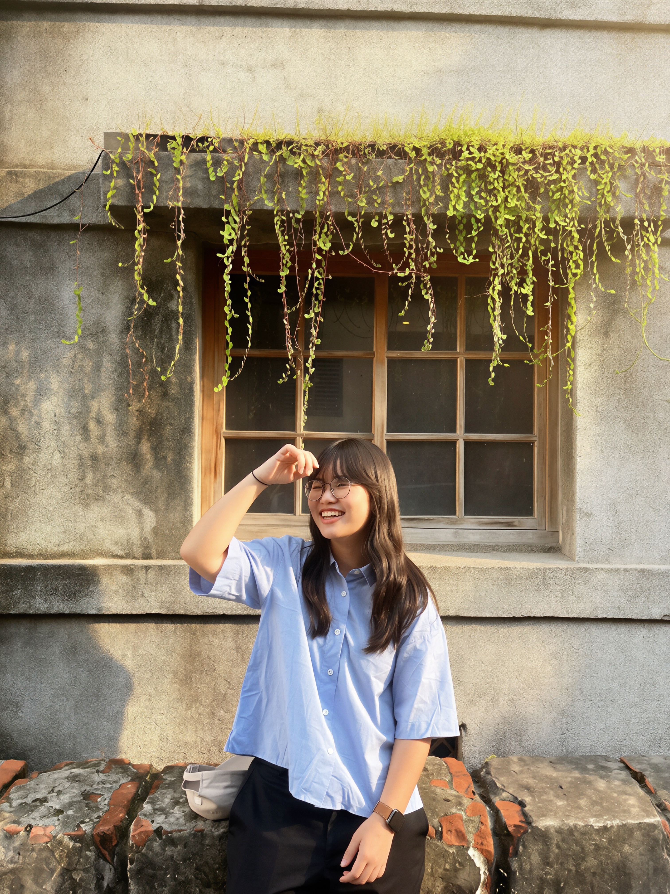

HR Learning Fellow
- Participated in HR-focused learning and career exchange sessions.
- Applied insights to resume refinement and interview preparation.
YU, HSIN-HUA · Portfolio 2026
Finance | Product | Organizational Development 財務｜產品｜組織發展
Designing better systems for people to learn, work, and grow.
I build practical systems at the intersection of finance, product, and organizational development.

About Me
My work centers on the intersection of finance, organization, and product.
I care about how analytical thinking and organizational understanding support better decisions, stronger systems, and higher-quality execution.
Starting from a finance background, I continue to explore HR, product work, and digital practice. Over time, I have built a cross-disciplinary approach that combines business analysis, process thinking, and generative AI tools to turn ideas into practical solutions.
Certified in ESG fundamentals and experienced in carbon-policy research.
Python, Power BI, and analytics methods to turn insights into decisions.
Able to bridge finance, HR, and product contexts with shared execution logic.
Hands-on training facilitation and internal workshop design experience.
Experience
Finance → Operations → Product → Organizational Development
Leadership & Communities
Projects
Skills
Contact
If you’d like to connect,
let’s talk.
I’m open to roles and collaborations in HR tech, organizational development, product management, and ESG.
Feel free to reach out anytime and I’ll reply as soon as possible.